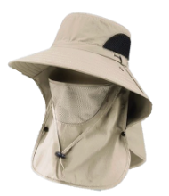
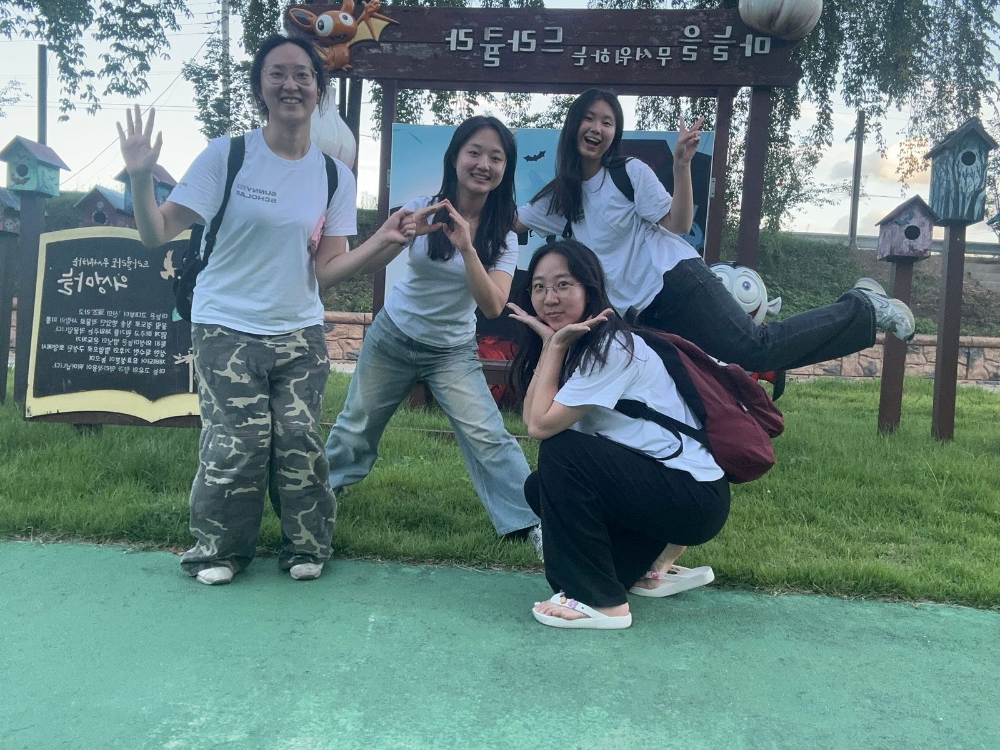

- 의료 접근성 원천 차단 및 치료비 책임 전가
- 통계 누락으로 인한 정책 소외

2025년 7월, 경북의 한 고추밭. 그늘조차 없는 노지에서 장시간 일하던 태국 출신의 60대 노동자 A씨가 열성 쇼크로 쓰러졌습니다. 응급실로 이송된 그는 언어 기능에 심각한 후유증을 얻었습니다.
이 사건은 정부의 온열질환 통계에 집계되지 않았습니다. 오직 저희 ‘헷사과’ 팀이 현장에서 직접 만난 이주노동자단체의 증언과 극소수의 기사를 통해서만 들을 수 있었던 ‘공론화되지 않은 사고’입니다.
“일하던 중 얼굴이 창백해지고 몸이 덜덜 떨렸어요. 순간 정신을 잃지 않으려고 마시던 냉수를 머리에 들이 부으면서 버텼습니다”
라오스 출신의 가지밭 노동자 C씨

그렇다면 폭염 위험을 현장에서는 어떻게 느끼고 대처하고 있었을까요? 이주노동자를 보호하려는 작은 움직임이라도 찾아보고자, 여러 이해관계자들을 만났습니다.
“외국인들은 원래 우리보다 더위를 훨씬 잘 견딘다니까요?”
의성군 옥산면 최00 농부“어느 현장으로 갈지도 매일 바뀌는데, 안전교육까지 하기 어려운 구조예요.”
안동시 B인력업체“더워도 그냥 참고 일했어요. 쉬자고 먼저 말할 수 없거든요.”
네팔 국적 30대 남성“그분들도 덥겠죠, 분명 힘들텐데, 저희 입장에서는 해드릴 수 있는 게 없습니다.”
지자체 관계자지자체조차 개입할 수 없는 거대한 사각지대를 확인한 헷사과 팀은, 이주노동자들이 처한 ‘고용 구조의 특수성’을 근본적으로 파헤치기 위해 현장 심층 조사와 문헌 연구를 병행했습니다.
지금까지 살펴본 바와 같이, 농촌 이주노동자의 온열질환 문제는 최소한의 시스템이 전 단계에 걸쳐 총체적으로 붕괴되어 있는 구조적 재난입니다.
농촌 이주노동자는 사전 예방, 현장 대응, 사후 관리에 이르는 구조적 공백으로 인해, 폭염이라는 기후 위기 앞에 최소한의 안전망도 없이 방치되는 ‘다중적 사각지대’에 놓여 있습니다.
헷사과는 그 해답을 노동자의 체온 조절과 직결되는 ‘복장 표준을 갖추는 것’에서 찾았습니다.
어떠한 솔루션이 현장에서 작동하는 하나의 ‘표준’으로 정립되기 위해 필요한 지점을 고민해보았습니다. 온열질환 예방과 올바른 복장 지식 전파를 위해서는 다음과 같은 세 가지 조건이 충족되어야 한다고 생각했습니다.
그리고 이주노동자가 일터에 도착한 즉시 고민 없이 완벽한 복장을 착용할 수 있도록, 분산되어 있던 필수 보호물품들을 하나의 패키지로 결합해 ‘안심키트’를 완성했습니다.




온열질환 안심 키트에는 총 10개 언어로 제작된 다국어 리플렛이 함께 포함되어 있습니다. 한국어 숙련도가 낮은 이주노동자가 온열질환에 대한 핵심 정보를 쉽고 정확하게 이해할 수 있도록 설계한 것인데요.
다국어 리플렛은 이러한 정보 접근성의 차이를 최소화하고, 노동자가 스스로 위험을 인지하고 대응할 수 있도록 돕기 위해 고안되었습니다.
“팔토시, 쿨스카프, 모자 중에서 모자가 제일 필요해요. 더운 날 얼굴 가리는 것이 가장 중요해요.”
인도네시아 노동자 인터뷰 중
2025년 여름날, SK행복나눔재단의 [Sunny Scholar in 의성] 프로젝트로 모인 네 명의 대학생, 헷사과 팀. 농촌 이주노동자가 겪는 온열질환 문제를 수면 위로 드러내는 것을 목표로 삼고 연구를 진행했습니다.
“이주노동자 문제는 팔, 다리가 잘려야만 뉴스에 나와요.”
경북북부이주노동자센터 소장님
헷사과는 문제 당사자부터 그들의 동료, 고용 농장주, 이주민 지원 기관 및 센터, 인력업체, 의성군청 등 다양한 이해관계자들을 만나 현장의 이야기를 생생하게 들었습니다.
이 연구를 통해, 함께 살아가지만 소외된 곳에 있는 이들에게 온기가 닿기를 희망합니다.
